Validation case matrix
| Case | Protocol | Körner | DER |
|---|---|---|---|
| Quasistatic inextensible cantilever | Static ALM sweep, hard stretch/shear, Γ 0.03–100 | 8/8 gated | 8/8 gated |
| Inextensible cantilever convergence | Hard-ALM mesh refinement, Γ 0.1 & 10 | monotone | monotone |
| Cantilever master-curve (dynamic gamma-sweep) | Dynamic-settle, stiff-penalty extensible, Γ 1–100 | Hausdorff 3.60% | Hausdorff 3.34% |
| Quasistatic-corrected frontier grid | 12-point frontier; dynamic predictor → static corrector | 12/12 | 12/12 |
| Dynamic bend-twist frontier slice | Fully-dynamic 2D/3D slice | PASS | PASS |
| Rhodes-style sampled grid | Rhodes quick grid, 30 cases | 30/30 | 30/30 |
Quasistatic inextensible cantilever
Hard stretch/shear AL-quasistatic cantilever (static solver, no dynamic settle); H/W gate plus monotone mesh refinement.
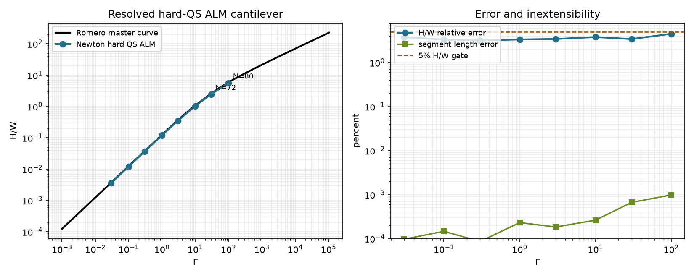
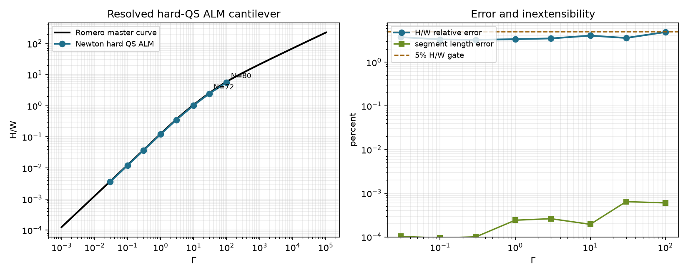
| Γ | N | Ref H/W | Körner H/W | K err | DER H/W | DER err | Force resid K/D | Gate |
|---|---|---|---|---|---|---|---|---|
| 0.03 | 32 | 0.00374997 | 0.00360876 | 3.77% | 0.0036098 | 3.74% | 0.0048 / 0.0048 | pass |
| 0.1 | 32 | 0.0124995 | 0.0120818 | 3.34% | 0.0120849 | 3.32% | 0.0043 / 0.0014 | pass |
| 0.3 | 32 | 0.0374877 | 0.0362901 | 3.19% | 0.0362691 | 3.25% | 0.00048 / 0.00049 | pass |
| 1 | 32 | 0.124562 | 0.120382 | 3.36% | 0.12038 | 3.36% | 0.00038 / 0.00045 | pass |
| 3 | 32 | 0.364557 | 0.351993 | 3.45% | 0.351825 | 3.49% | 0.0003 / 0.00042 | pass |
| 10 | 32 | 1.0668 | 1.02621 | 3.81% | 1.02357 | 4.05% | 0.00015 / 0.00016 | pass |
| 30 | 72 | 2.54716 | 2.45973 | 3.43% | 2.45598 | 3.58% | 0.00016 / 0.00016 | pass |
| 100 | 80 | 5.8881 | 5.62257 | 4.51% | 5.60054 | 4.88% | 2.6e-05 / 2.6e-05 | pass |
Inextensible cantilever convergence (gamma = 0.1)
Mesh-refinement convergence at low load.
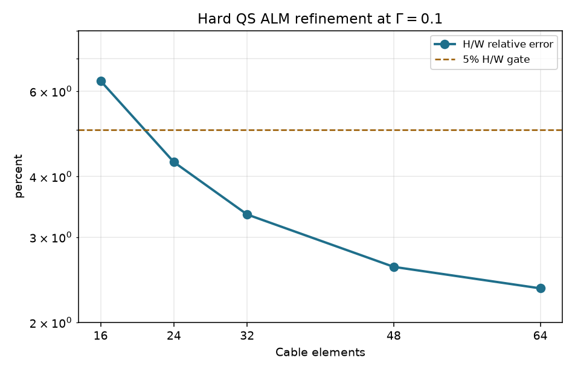
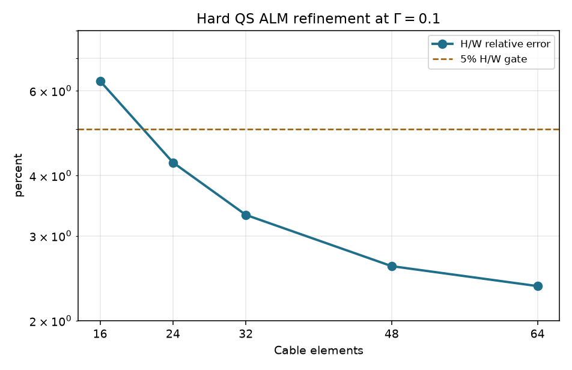
| Elements | Iters | Ref H/W | Körner H/W | K err | DER H/W | DER err |
|---|---|---|---|---|---|---|
| 16 | 80000 | 0.0124995 | 0.0117115 | 6.30% | 0.0117136 | 6.29% |
| 24 | 80000 | 0.0124995 | 0.0119638 | 4.29% | 0.011967 | 4.26% |
| 32 | 80000 | 0.0124995 | 0.0120818 | 3.34% | 0.0120849 | 3.32% |
| 48 | 80000 | 0.0124995 | 0.0121738 | 2.61% | 0.0121749 | 2.60% |
| 64 | 80000 | 0.0124995 | 0.0122054 | 2.35% | 0.0122044 | 2.36% |
Inextensible cantilever convergence (gamma = 10)
Mesh-refinement convergence at high load.
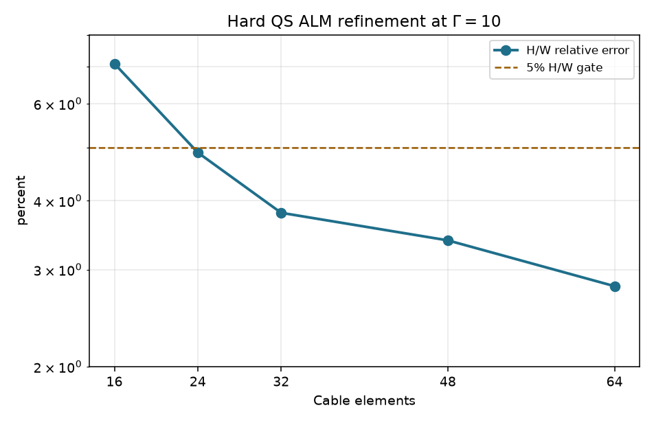
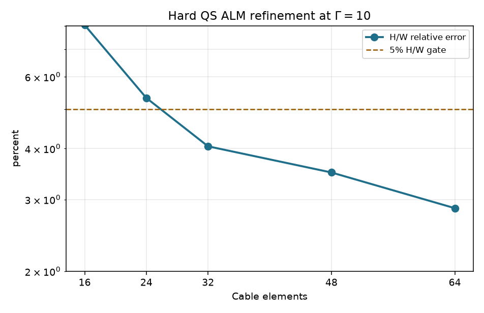
| Elements | Iters | Ref H/W | Körner H/W | K err | DER H/W | DER err |
|---|---|---|---|---|---|---|
| 16 | 10000 | 1.0668 | 0.991097 | 7.10% | 0.981069 | 8.04% |
| 24 | 15000 | 1.0668 | 1.01458 | 4.90% | 1.01 | 5.32% |
| 32 | 20000 | 1.0668 | 1.02621 | 3.81% | 1.02357 | 4.05% |
| 48 | 25000 | 1.0668 | 1.03062 | 3.39% | 1.02951 | 3.50% |
| 64 | 35000 | 1.0668 | 1.03692 | 2.80% | 1.03631 | 2.86% |
Cantilever master-curve (dynamic gamma-sweep)
Tip deflection vs the Romero cantilever master curve (dynamic-settle equilibrium); pass below 5% Hausdorff.
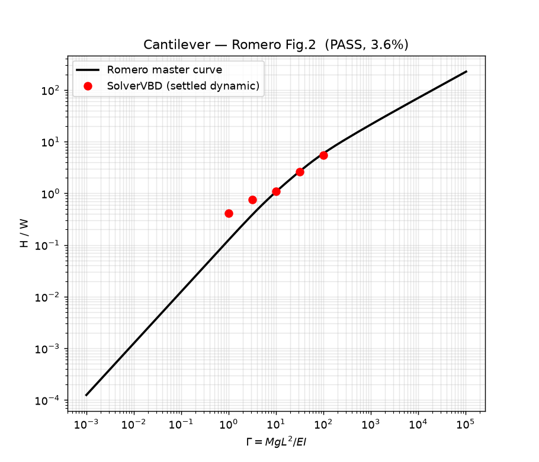
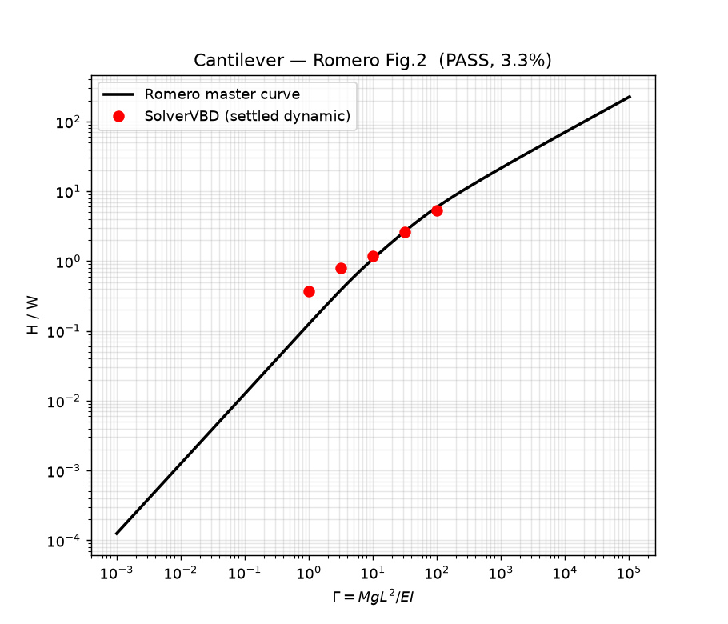
Quasistatic-corrected bend-twist frontier grid
2D/3D branch selection across the Romero phase frontier (dynamic predictor then quasistatic corrector).
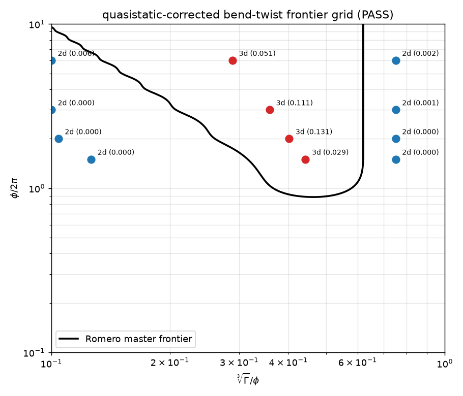
| φ/2π | x | Γ | Sample | Expected | Körner y-span/L | Körner | DER y-span/L | DER |
|---|---|---|---|---|---|---|---|---|
| 1.5 | 0.1262 | 1.684 | below lower boundary | 2D | 1.727e-05 | 2D | 2.972e-05 | 2D |
| 1.5 | 0.4424 | 72.5 | inside 3D band | 3D | 0.02903 | 3D | 0.04352 | 3D |
| 1.5 | 0.75 | 353.2 | above upper boundary | 2D | 0.0001581 | 2D | 0.0002756 | 2D |
| 2 | 0.1042 | 2.246 | below lower boundary | 2D | 8.053e-06 | 2D | 1.36e-05 | 2D |
| 2 | 0.4021 | 129 | inside 3D band | 3D | 0.1313 | 3D | 0.1507 | 3D |
| 2 | 0.75 | 837.2 | above upper boundary | 2D | 0.0002464 | 2D | 0.0003501 | 2D |
| 3 | 0.1 | 6.697 | below lower boundary | 2D | 1.943e-05 | 2D | 3.543e-05 | 2D |
| 3 | 0.3588 | 309.3 | inside 3D band | 3D | 0.111 | 3D | 0.1063 | 3D |
| 3 | 0.75 | 2825 | above upper boundary | 2D | 0.0005701 | 2D | 0.0006376 | 2D |
| 6 | 0.1 | 53.58 | below lower boundary | 2D | 0.006118 | 2D | 0.00493 | 2D |
| 6 | 0.2886 | 1288 | inside 3D band | 3D | 0.0513 | 3D | 0.04914 | 3D |
| 6 | 0.75 | 2.26e+04 | above upper boundary | 2D | 0.001773 | 2D | 0.001372 | 2D |
Dynamic bend-twist frontier slice
Fully-dynamic 2D/3D classification slice.
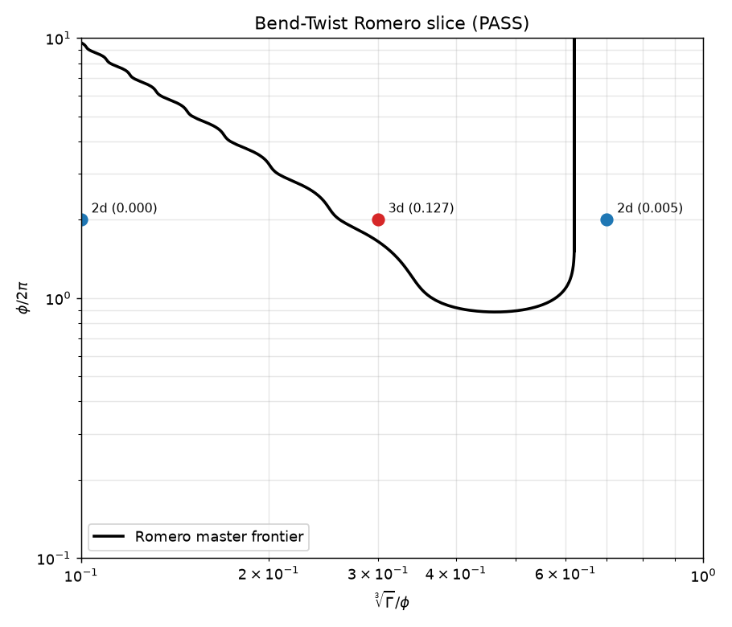
Rhodes-style sampled grid (30 cases)
Fully-dynamic sampled phase grid (soft).

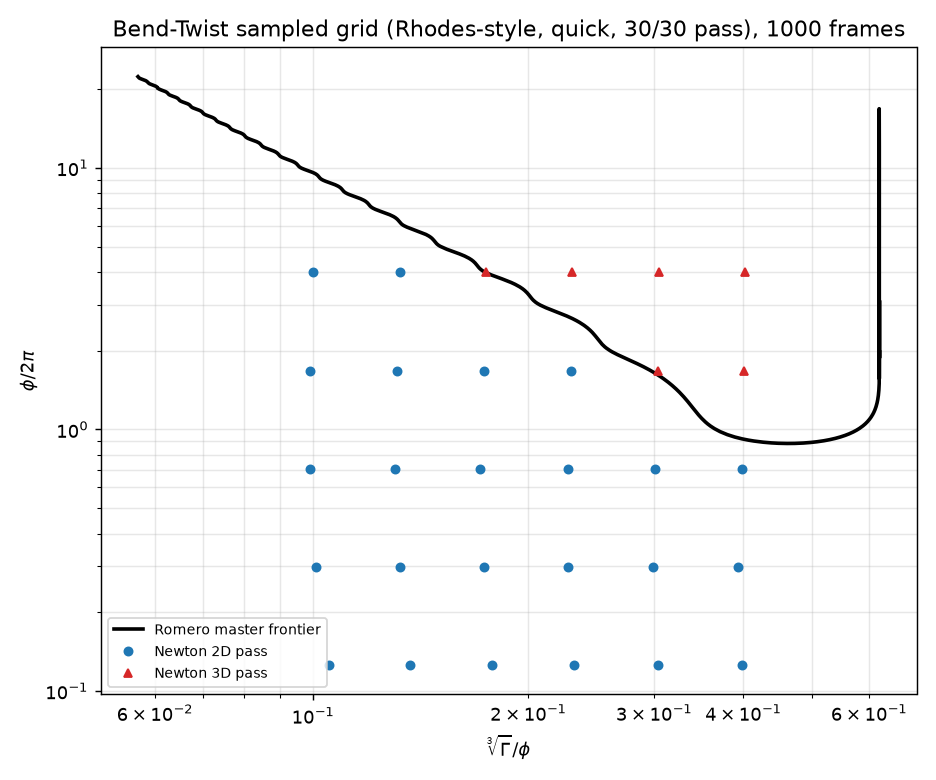
| Metric | Körner | DER |
|---|---|---|
| Dynamic frames | 1000 | 1000 |
| Converged | 1 | 1 |
| Stable checks | 2 | 2 |
| Max coplanarity drift | 0.0007972 | 0.0005749 |
| Label changes | 0 | 0 |
| Grid | 5 φ rows × 6 x columns (30 cases), Rhodes-style | |
| Classification | 30 / 30 | 30 / 30 |
| φ/2π | x | κ | Segs | Körner coplanarity | Körner | DER coplanarity | DER |
|---|---|---|---|---|---|---|---|
| 0.1259 | 0.1052 | 2 | 15 | 6.63e-09 | 2D | 1.01e-09 | 2D |
| 0.1259 | 0.1365 | 1.52 | 15 | 2.02e-08 | 2D | 1.48e-10 | 2D |
| 0.1259 | 0.1777 | 1.15 | 15 | 6.91e-09 | 2D | 3.38e-11 | 2D |
| 0.1259 | 0.2321 | 0.871 | 15 | 2.65e-09 | 2D | 2.77e-12 | 2D |
| 0.1259 | 0.3038 | 0.66 | 15 | 1.54e-09 | 2D | 1.07e-11 | 2D |
| 0.1259 | 0.3984 | 0.5 | 15 | 1.22e-09 | 2D | 6.43e-11 | 2D |
| 0.2985 | 0.1009 | 2 | 15 | 7.96e-11 | 2D | 4.21e-11 | 2D |
| 0.2985 | 0.1321 | 1.52 | 15 | 1.83e-09 | 2D | 4.25e-11 | 2D |
| 0.2985 | 0.1733 | 1.15 | 15 | 1.87e-09 | 2D | 6.17e-10 | 2D |
| 0.2985 | 0.2276 | 0.871 | 15 | 9.55e-08 | 2D | 2.16e-08 | 2D |
| 0.2985 | 0.2992 | 0.66 | 15 | 6.25e-06 | 2D | 3.88e-06 | 2D |
| 0.2985 | 0.3937 | 0.5 | 15 | 3.35e-05 | 2D | 3.25e-05 | 2D |
| 0.7079 | 0.09902 | 2 | 15 | 6.09e-07 | 2D | 6.3e-08 | 2D |
| 0.7079 | 0.1302 | 1.52 | 15 | 4.37e-05 | 2D | 2.41e-05 | 2D |
| 0.7079 | 0.1713 | 1.15 | 15 | 1.52e-08 | 2D | 6.18e-08 | 2D |
| 0.7079 | 0.2271 | 0.871 | 19 | 3.65e-08 | 2D | 1.69e-08 | 2D |
| 0.7079 | 0.301 | 0.66 | 25 | 5.7e-08 | 2D | 4.06e-11 | 2D |
| 0.7079 | 0.3988 | 0.5 | 34 | 8.5e-07 | 2D | 2.51e-07 | 2D |
| 1.679 | 0.09897 | 2 | 20 | 8.6e-06 | 2D | 2.49e-05 | 2D |
| 1.679 | 0.1311 | 1.52 | 26 | 1.16e-05 | 2D | 6.05e-06 | 2D |
| 1.679 | 0.1736 | 1.15 | 35 | 9.3e-07 | 2D | 5.79e-07 | 2D |
| 1.679 | 0.2297 | 0.871 | 47 | 3.07e-06 | 2D | 1.22e-05 | 2D |
| 1.679 | 0.3036 | 0.66 | 62 | 0.0447 | 3D | 0.0441 | 3D |
| 1.679 | 0.4012 | 0.5 | 83 | 0.0297 | 3D | 0.0301 | 3D |
| 3.981 | 0.1 | 2 | 49 | 1.71e-05 | 2D | 1.08e-05 | 2D |
| 3.981 | 0.1322 | 1.52 | 65 | 1.19e-05 | 2D | 1.62e-05 | 2D |
| 3.981 | 0.1747 | 1.15 | 86 | 0.107 | 3D | 0.106 | 3D |
| 3.981 | 0.2307 | 0.871 | 113 | 0.0708 | 3D | 0.0706 | 3D |
| 3.981 | 0.3046 | 0.66 | 150 | 0.0499 | 3D | 0.0498 | 3D |
| 3.981 | 0.4022 | 0.5 | 199 | 0.0309 | 3D | 0.0296 | 3D |
Scope & assessment
| Item | Status | Note |
|---|---|---|
| Strain measure (Körner vs DER) | match | Both produce matching H/W, classification, and labels across every scenario — the comparison's result. |
| Bend-Twist frontier | 12/12 both | Quasistatic-corrected and dynamic-slice classify identically to the sampled labels. |
| Rhodes sampled grid | 30/30 both | Broadest parity check; both measures converge. |
| Stick-slip / contact | separate report | Contact and friction behavior is tracked outside this cable strain report. |
Original single-measure page preserved at index_single_measure_original.html.